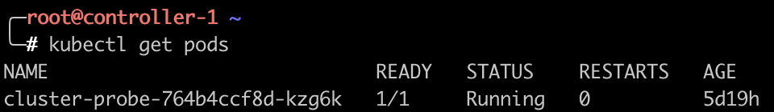
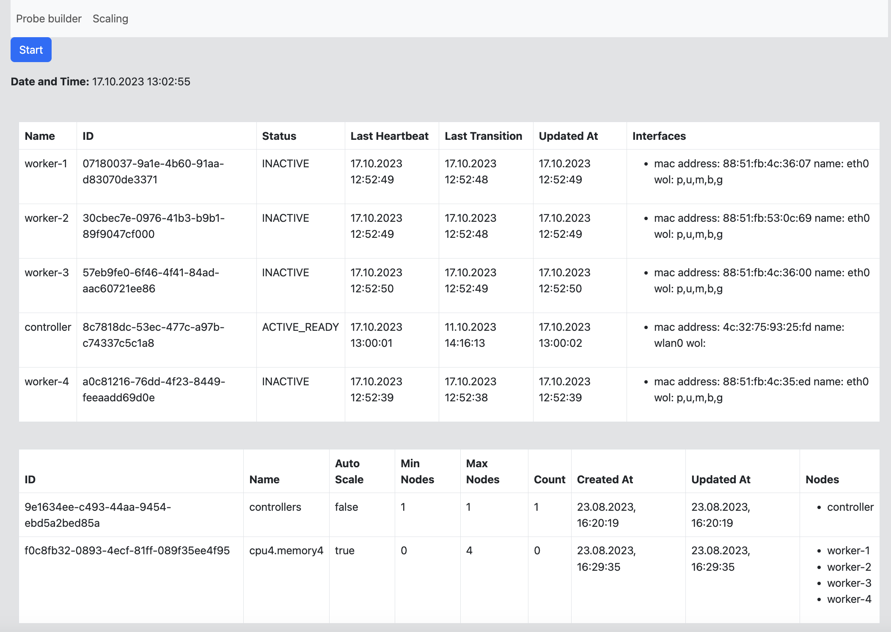

Introduction
In this section you will find a guide on how to run tests on reCluster, with ClusterProbe and ProbeBuilder.
SSH setup
In order to access reCluster you need a configured ssh connection with reLaptop. If you don't have an access, you need to reach Lorenzo Angeli, the project owner. Also remember to configure the VPN connection with the university network (https://icts.unitn.it/en/vpn).
Having an ssh connection configured you should be able to connect to the reLaptop:
ssh user@10.196.37.164 where user would be your username.
now you can ssh to reCluster:
ssh recluster
Scripts
Once you will be logged in into the reCluster you will be able to find a set of scripts in the root directory:
- pod.sh - this script will keep track of the amount of pods for a specified amount of time, the results will be saved in files node_name_pod_counts.csv. You need to specify the amount of seconds for which this script will be running, it should be equal to the duration of the test.
- hpa.sh - this script will set a specified target for horizontal pod autoscaling, if no arguments will be passed the default value is 80. By default the maximum amount of pods is set to 1000.
- no_csa.sh - this script turns off the cluster-autoscaling by constraining the amount of pods to the capacity of the controller.
- unassing_node.sh - this script unassigned the node from the node pool, the node will be turned off. You need to pass the id of the node as an arugment.
- downscale.sh - this script will delete horizontal pod autoscaling and downscale pods to 1
Test running
Before you run the test make sure that cluster-probe is running by checking:
kubectl get pods

if the result is different you should create a deployment:
kubectl apply -f clusterProbe_test.yaml
Now if you want to configure your cluster or track the pods count you can run one of the scripts
In order to run tests from the ProbeBuilder you need to configure port forwarding with ssh. Open another window in your terminal and run:
ssh -L 9090:localhost:9090 user@10.196.37.164
and now another forward to reCluster:
ssh -L 9090:10.43.252.50:8080 root@recluster
Now you can run test from your machine on localhost:9090.
If you additionally what to be able to monitor your tests you should create similar forwarding on port 3030:
relaptop:
ssh -L 3030:localhost:3030 user@10.196.37.164
recluster:
ssh -L 3030:localhost:8080 recluster
Now you should be able to see the table of nodes in the scaling page of ProbeBuilder:
